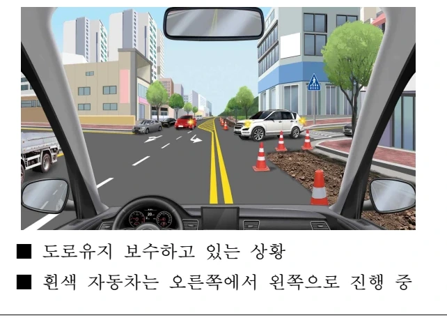

801. 직진으로 통행하는 중이다. 안전한 운전방법 2가지는?

- ①흰색 자동차가 진입하지 못하도록 가속하여 통행한다.
- ②흰색 자동차가 직진할 수 있으므로 서행하며 주의를 살핀다.
- ③도로유지 보수 중에 좌측을 통행할 수 있으므로 그대로 통행한다.
- ④흰색 승용차가 멈출 것이라 예측하고 반대방향 차에 주의하며 통행한다.
- ⑤반대방향 빨강색 승용차가 좌회전차로로 진입할 수 있으므로 필요한 경우 정차하여 상황을 살핀다.
정답 보기
정답
② 흰색 자동차가 직진할 수 있으므로 서행하며 주의를 살핀다.
⑤ 반대방향 빨강색 승용차가 좌회전차로로 진입할 수 있으므로
필요한 경우 정차하여 상황을 살핀다.
근거·해설
도로교통법 제13조. 도로유지 보수 공사로 인해 우측통행이 불가능 한 경우, 도로교통법에 따라 좌측을 통행할 수 있다. 이 때 반대방향에서 진행하는 자동차에는 현저한 주의가 필요하다. 반대방향 승용차가 좌회전하려는 경우 충돌가능성이 높기 때문에 필요하다면 정지하여야 한다. 또 제시된 상황에서 흰색 승용차는 통행중이며, 정차, 우 회전 또는 직진(중앙선 침범) 및 좌회전(중앙선 침범) 행동들 중 한 가지를 할 수 있다. 특히, 일부 운전자들이 이면 도로에서 중앙선을 침범하여 직진하거나 좌회전하는 사례가 있기 때문에 전방에서 진입하는 차의 운전자 모두가 멈출 것이라 예견하거나 우회전만 할 것이라고 예단하는 것은 위험하다.